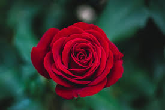
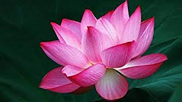
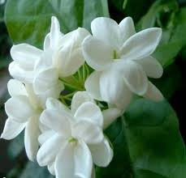
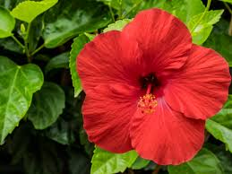

Flowers are also called the bloom or blossom of a plant. Flowers have petals. Inside the part of the flower that has petals are the parts which produce pollen and seeds.
Here some of flowers.. Click on the images for further information
ROSE

A rose is a woody perennial flowering plant of the genus Rosa, in the family Rosaceae, or the flower it bears.
LOTUS

Nelumbo nucifera, also known as Indian lotus, sacred lotus, bean of India, Egyptian bean or simply lotus, is one of two extant species of aquatic plant in the family Nelumbonaceae
JASMINE

Jasmine is a genus of shrubs and vines in the olive family. It contains around 200 species native to tropical and warm temperate regions of Eurasia, Australasia and Oceania
HIBISCUS

Hibiscus is a genus of flowering plants in the mallow family, Malvaceae. The genus is quite large, comprising several hundred species that are native to warm temperate, subtropical and tropical regions throughout the world.